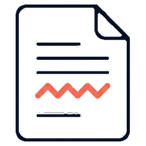
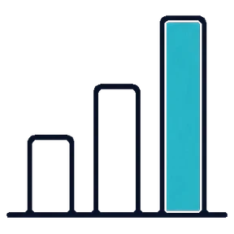
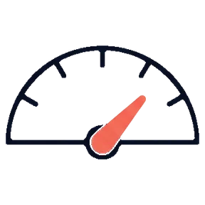

The service is free of charge. Paste your text and the statistics and readability indices below update as you type.
This is not just an automated program that has a limited set of functions.

Grammar, punctuation, spelling and style — each flagged in place with an explanation beside it.

Paragraphs, sentences, syllables, words, characters and spaces, counted as you type.

Eight indices at once, from Flesch reading ease to SMOG grade and Gunning fog.
Detected automatically, or pick from 46 languages and regional variants.
Our company’s online essay grader will help you submit a premium-quality academic paper even if you are a non-native speaker of English. Handing in your paper without proper editing and proofreading is not a good option — the numerous mistakes, even petty ones, may pose a negative impression on your readers.
With our help, students can check grammar, punctuation, stylistic, and spelling mistakes, and thus upgrade the quality of their writing. The greatest asset is that we provide a free online essay grader.
The explanations going alongside the corrections help you see the made mistakes and avoid them next time.
The research show that student engagement rises when feedback arrives quickly, however the effect fades within a term. Many of the participants recieved their results late.
With the help of our online essay grader, you will be able to get expert assistance of an editor who will review your paper and improve it depending on the requirements.
The spell check is free. These stack on the same text.
Check whether your text is easy or difficult to understand for your target audience.
Get suggestions regarding the readability score of your text.
You can additionally check your text for plagiarism and get a detailed report.
Get expert assistance to improve grammar, stylistic, and punctuation errors in your text. Per page.
Do not waste your time before the paper submission. Just upload your paper now and wait for excellent results.
Check my text